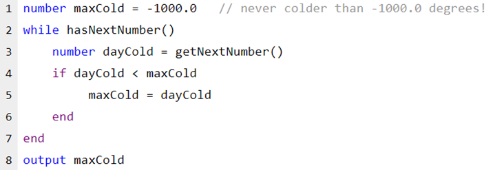

Jude is writing a program to find the coldest temperature in the previous year. Jude has a list of the low temperature for each day that looks as follows:
23.5
21.7
43.0
…
…
35.9
The original program runs but gives the wrong answer:

What change should Jude make to fix the program and output the coldest temperature?
Because maxCold is set so low in line 1, line 4 is never true and maxCold will always be -1000.0. By modifying line 1 to maxCold = 1000.0 - higher than any expected value, the first value read from the list will become the initial maxCold and the program will work as expected.